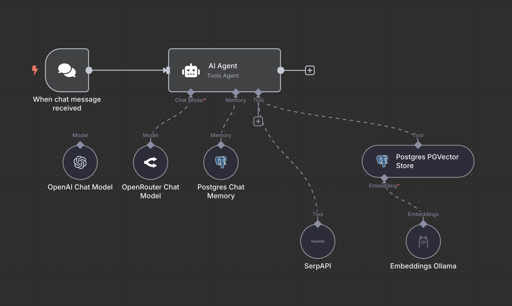

Специализируюсь на создании цифровых агентов, бот-инфраструктур и no-code систем. Убираю рутину, внедряю нейросети, связываю сервисы в устойчивые бизнес-сценарии.

Навыки
ИИ технологии
OpenAI, GPT-4, Claude
RAG, LangChain
Векторные базы данных
No-code платформы
n8n
Make (Integromat)
Zapier
Разработка
Python, Streamlit
API-интеграции
Docker
Базы данных
PostgreSQL (pgvector)
Google Sheets
JSON
Проекты
Streamlit-интерфейс + n8n + Postgres
Веб-приложение для мониторинга логов
Фильтрация ошибок
Хранение и визуализация результатов
Автоматизация сценариев обработки
RAG + PostgreSQL
Retrieval-Augmented Generation для улучшенного поиска
Хранение векторных представлений в PostgreSQL
Интеграция с LLM для релевантных ответов
Оптимизация производительности системы
Цель
Развиваться как инженер по ИИ и автоматизации, создавать умные системы, которые улучшают процессы, экономят ресурсы и приносят реальную пользу бизнесу.